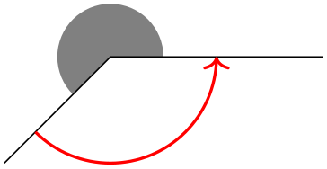
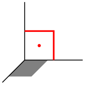

The TikZ and PGF Packages
Manual for version 3.1.10
Libraries
41 Angle Library¶
-
TikZ Library angles ¶
\usetikzlibrary{angles} %
LaTeX
and plain
TeX
\usetikzlibrary[angles] %
ConTeXt
This library defines pic types for drawing angles.
-
Pic type angle=⟨A⟩--⟨B⟩--⟨C⟩
-
/tikz/angle radius=⟨dimension⟩ (no default, initially 5mm) ¶
-
/tikz/angle eccentricity=⟨factor⟩ (no default, initially 0.6) ¶
This pic adds a drawing of an angle to the current path. This “drawing of an angle” consist of a “sector” or “wedge” or “slice” whose pointed end is at point ⟨B⟩ and whose straight sides lie on the lines form ⟨B⟩ to ⟨A⟩ and from ⟨B⟩ to ⟨C⟩. The length of these lines is governed by the following key:
The length of the sides of the angle’s wedge:

\usetikzlibrary {angles}
\tikz \draw (2,0) coordinate
(A) --
(0,0) coordinate
(B)
--
(-1,-1) coordinate
(C)
pic
[fill=black!50] {angle
=
A--B--C}
pic
[draw,->,red,thick,angle radius=1cm] {angle
=
C--B--A};
The three points ⟨A⟩, ⟨B⟩, and ⟨C⟩ must be the names of nodes or coordinates; you cannot use direct coordinates like “(1,1)” here.
You can leave out the three points, in this case the text A--B--C is used; so in the above examples we could just have written {angle} in the first pic.
Concerning the sector that makes up the drawing of the angle, the angular part of this sector is drawn in front of the path if the draw option is given to the pic, while filled sector is drawn behind the pic, provided an option like fill or shade is passed to the pic. The following example shows the difference:
\usetikzlibrary {angles}
\tikz \draw [line width=2mm]
(2,0) coordinate
(A) --
(0,0) coordinate
(B)
--
(1,1) coordinate
(C)
pic
[draw=blue, fill=blue!50, angle radius=1cm] {angle};
When pic text is set (which you typically do by using the quotes syntax), a node will be created whose name is empty (and, thus, inherits the pic’s name) and which will be at the half-way angle between the lines to ⟨A⟩ and ⟨C⟩ and whose distance from ⟨B⟩ is angle radius times the following factor:

\usetikzlibrary {angles,quotes}
\tikz \draw (2,0) coordinate
(A) --
(0,0) coordinate
(B)
--
(1,1) coordinate
(C)
pic
["$\alpha$", draw, ->] {angle};
\usetikzlibrary {angles,quotes}
\tikz \draw (2,0) coordinate
(A) --
(0,0) coordinate
(B)
--
(1,1) coordinate
(C)
pic
["$\alpha$", draw, angle eccentricity=1] {angle};
\usetikzlibrary {angles,quotes}
\tikz {
\draw (2,0) coordinate
(A) --
(0,0) coordinate
(B)
--
(1,1) coordinate
(C)
pic
(alpha) ["$\alpha$", draw] {angle};
\draw (alpha) circle
[radius=5pt];
}
-
Pic type right angle=⟨A⟩--⟨B⟩--⟨C⟩ ¶
This pic adds a drawing of a right angle to the current path. It works in the same way as angle pic.

\usetikzlibrary {angles}
\tikz
\draw (0,0,0) coordinate
(O)
(1,0,0) coordinate
(A) --
(O)
(0,0,1) coordinate
(B) --
(O)
(0,1,0) coordinate
(C) --
(O)
pic
[fill=gray,angle radius=4mm] {right
angle
=
A--O--B}
pic
[draw,red,thick,angle eccentricity=.5,pic text=.]
{right
angle
=
A--O--C};